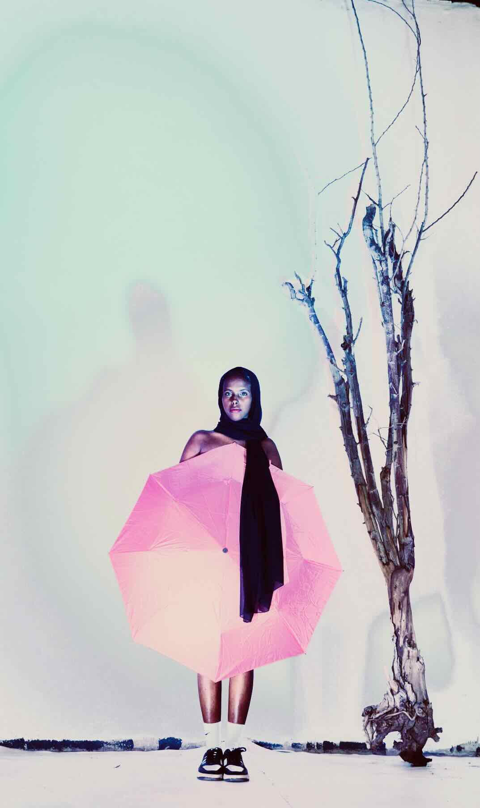
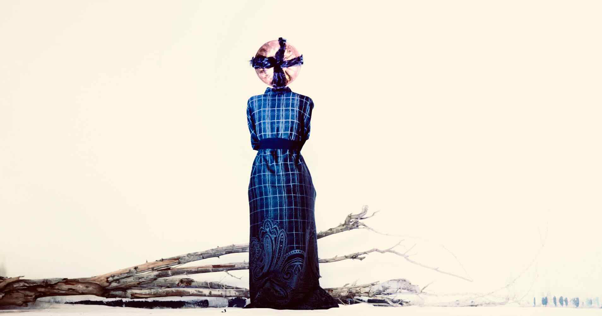
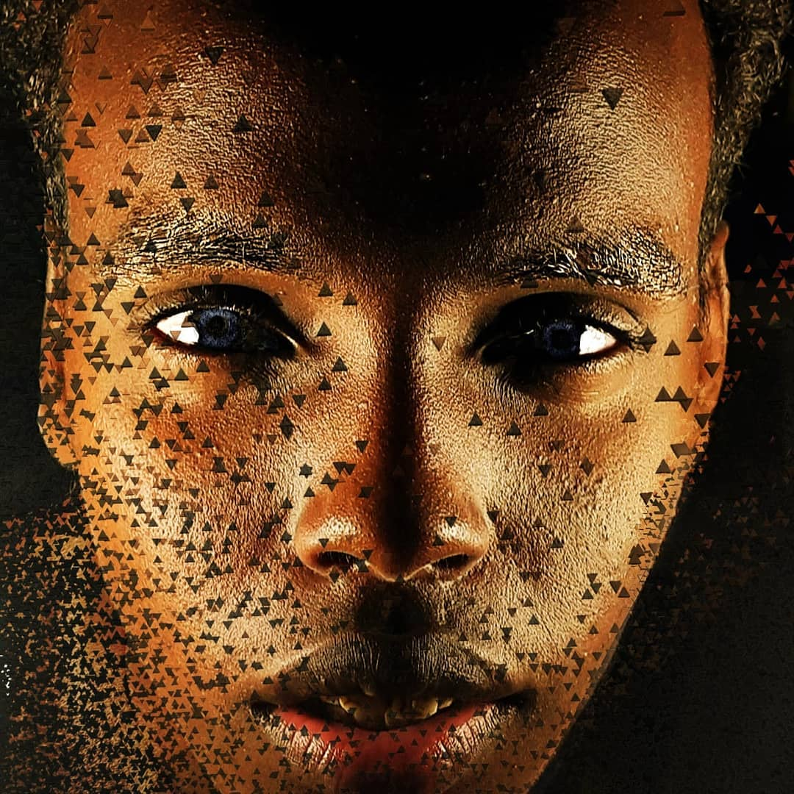
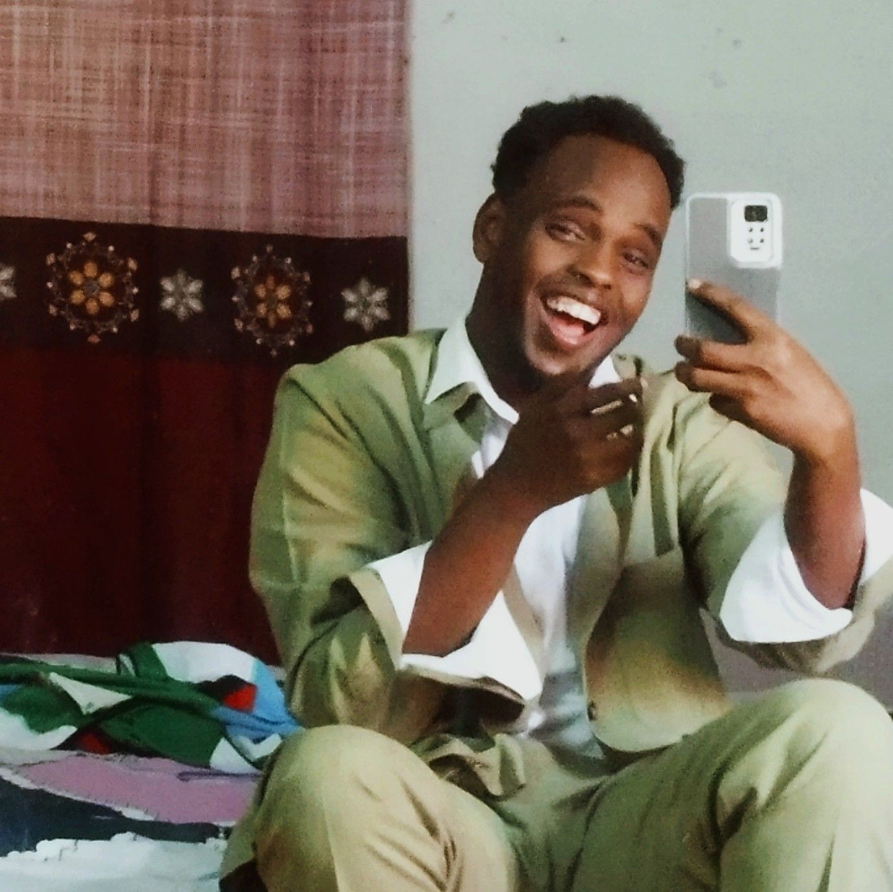
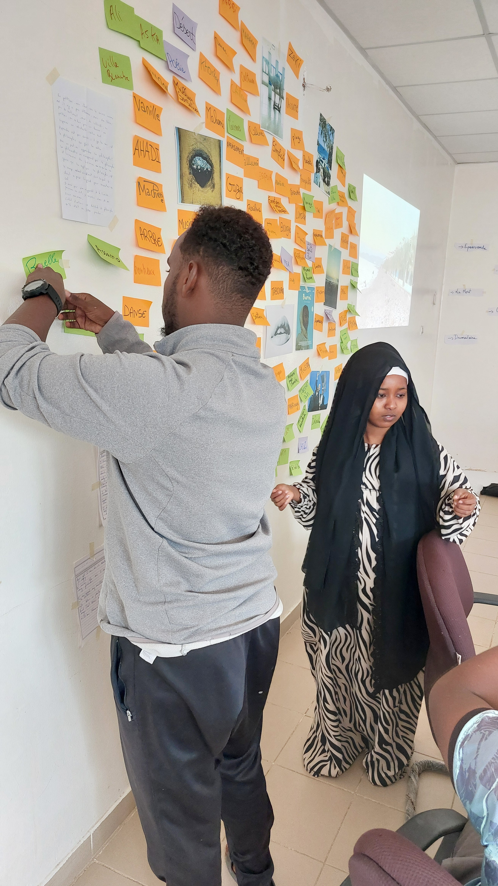

Galerie Photo
Captures d'instants authentiques




👋 Bonjour, je suis Zaki Abdou Sikieh
Photographie · Vidéo · Rédaction

Une production captivante qui a remporté les prix du Meilleur Espoir et de la Meilleure Actrice. Un récit visuel puissant qui démontre l'excellence en storytelling audiovisuel.

Écriture créative pour l'écran et la narration
Un récit captivant explorant les thèmes de l'identité et de la résilience à travers une narration visuelle puissante.
AperçuScénario créatif de Zaki Abdou Sikieh explorant des thèmes narratifs profonds et captivants.
AperçuScénario traitant d'une problématique sociale avec authenticité et profondeur narrative.
AperçuCaptures d'instants authentiques



Expert en communication visuelle et écrite, je combine photographie, vidéo et écriture pour raconter des histoires authentiques qui marquent les esprits. Passionné par la création de contenus impactants, je donne vie à des projets audiovisuels et narratifs uniques.